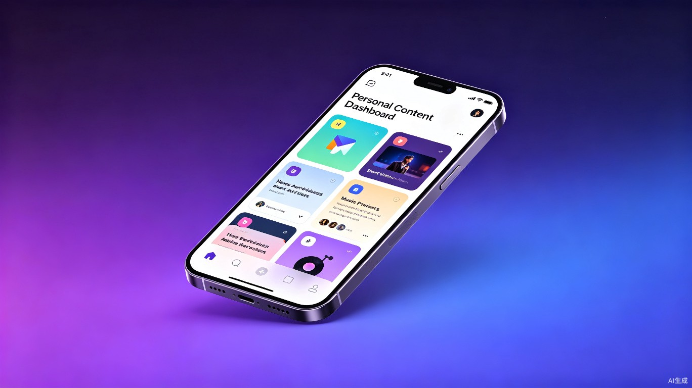

拾光集 · ShineBox
每个人的数字时光收藏馆
跨平台内容一键收藏，AI 智能整理，让好内容不再散落各处

好内容散落在各处，
想看的时候总也找不到
在信息爆炸的时代，我们每天在新闻、短视频、音乐、社交等数十个 App 间穿梭。 遇到喜欢的内容，点赞、收藏、转发——但这些痕迹只存在于各自的平台。 当你想回头再看时，却怎么也记不清它藏在哪个 App 的哪个角落。
内容碎片化
收藏的内容分散在微信、抖音、B站、知乎、网易云等十几个平台，没有统一入口，回忆成本极高。
整理成本高
手动分类、打标签费时费力，收藏的内容越积越多，最后变成"收藏即吃灰"，再也不会打开。
跳转体验差
想回看一条收藏内容，需要先找到对应 App，再在里面翻找收藏夹，路径冗长，体验割裂。
一个收藏夹，
装下你整个数字世界的美好
拾光集是一款个人专属的跨平台内容收藏 App。 用户只需复制感兴趣的内容链接，打开 App 即可自动识别并生成精美的收藏卡片。 AI 自动分类、打标签、生成摘要，让每一次收藏都有迹可循，每一次回看都轻松愉悦。
一键收藏，零摩擦
复制链接即触发收藏，粘贴即完成，无需手动输入任何信息，整个过程不到 3 秒。
AI 智能整理
自动识别内容类型、提取关键信息、生成智能标签和摘要，帮你把杂乱的收藏变得井井有条。
统一浏览体验
所有平台的收藏内容在一个 App 中展示，点击即可拉起原 App 播放，流畅无缝。
时光沉淀价值
你的每一次收藏都是品味的记录，AI 帮你发现兴趣轨迹，生成专属的内容画像。
四大核心能力，
打造你的私人内容博物馆
📥 智能采集层
剪贴板一键收藏
复制内容链接后，打开 App 自动检测剪贴板，一键完成收藏。支持分享面板直接导入，收藏零门槛。
AI 内容解析
自动识别链接来源平台，抓取标题、封面、作者、时长等元数据，生成统一格式的精美收藏卡片。
🧠 智能整理层
自动分类打标
AI 分析内容主题，自动归类到新闻、视频、音乐、文章、商品等分类，并生成精准标签，无需手动整理。
AI 摘要生成
长文自动提炼核心观点，视频自动生成内容梗概，让你在 30 秒内快速判断是否值得再看一遍。
🎨 浏览体验层
沉浸式浏览
瀑布流、时间线、分类视图多种浏览方式，精美的卡片式设计，让翻看收藏变成一种享受。
一键唤起原 App
点击收藏卡片即可通过 Deep Link 直接拉起对应 App 并定位到原内容，告别手动翻找的繁琐。
💡 价值发现层
个人兴趣画像
基于你的收藏行为，AI 分析你的兴趣分布、内容偏好，生成可视化的个人内容品味报告。
智能推荐与回忆
"去年今日"功能带你重温过往收藏，AI 还会基于你的品味推荐相关优质内容，发现更多惊喜。
四步完成收藏，
整个过程不到 10 秒
遇到好内容
在任意 App 中看到喜欢的内容
复制链接
点击分享，复制内容链接
打开拾光集
自动识别，AI 智能生成卡片
收藏完成
自动分类归档，随时翻看
AI 驱动的技术架构
基于 TRAE AI 能力，构建从内容采集、智能解析到价值挖掘的完整技术链路。 端云结合，兼顾体验与效率。
🔗 内容解析引擎
- 多平台适配器 — 支持抖音、B站、小红书、知乎、微信公众号、网易云音乐等 20+ 主流平台
- 元数据提取 — 自动抓取标题、封面、作者、发布时间、时长等信息
- OCR 辅助识别 — 对图片类内容进行文字识别，补充搜索索引
- 通用网页解析 — 对未适配网站，通过 AI 自动提取正文内容
🧠 AI 能力层（TRAE）
- 语义分类 — 基于大语言模型理解内容主题，自动归类打标
- 智能摘要 — 长文/视频/音频自动生成摘要，提升浏览效率
- 向量检索 — 内容向量化存储，支持语义搜索，找内容靠"感觉"就行
- 兴趣画像 — 基于收藏行为构建用户兴趣图谱，驱动个性化推荐
📱 客户端技术
- 跨端框架 — React Native / Flutter 一套代码多端运行
- 原生能力 — 剪贴板监听、分享扩展、Widget 小组件
- 本地优先 — 核心数据本地存储，支持离线浏览
- 流畅动画 — 卡片动效、转场动画，打造高级感体验
☁️ 服务端架构
- 云同步 — 多设备数据实时同步，收藏永不丢失
- 向量数据库 — 存储内容向量，支撑语义搜索和推荐
- 内容缓存 — 智能缓存策略，提升二次打开速度
- 隐私保护 — 端侧加密，用户数据完全可控
免费 + 增值订阅，
让好工具可持续
基础功能永久免费，让每一个用户都能享受到跨平台收藏的便利。 通过高级会员订阅实现商业化，同时探索内容发现的增值服务。
免费版
基础收藏功能
500 条收藏上限
基础分类浏览
Pro 会员
无限收藏数量
AI 智能摘要
高级搜索与筛选
多设备云同步
内容发现
基于兴趣的内容推荐
精选专栏订阅
个性化内容日报
差异化定位，
打造独特产品价值
市面上的收藏工具各有侧重，但真正以"个人内容收藏"为核心、AI 深度赋能的产品仍然稀缺。 拾光集聚焦个人用户的全平台内容聚合体验，用 AI 降低整理成本，用设计提升浏览愉悦感。
| 产品 | 跨平台收藏 | AI 智能整理 | 一键唤起原 App | 移动端体验 | 定位 |
|---|---|---|---|---|---|
| Pocket / Instapaper | 仅文章 | ✕ | ✕ | 一般 | 稍后读 |
| Notion / 飞书 | 需手动整理 | 有限 | ✕ | 偏重 | 知识库 |
| Raindrop | ✓ | ✕ | 有限 | 一般 | 书签管理 |
| ★ 拾光集 ShineBox | ✓ 全平台 | ✓ TRAE AI 驱动 | ✓ Deep Link | ✓ 原生体验 | 个人内容收藏馆 |
从 MVP 到生态，
稳步迭代进化
核心收藏体验跑通
- 基础收藏功能：链接粘贴、卡片生成、分类浏览
- 支持 5-8 个主流平台内容解析
- 基础 AI 能力：自动分类、标签生成
- 用户增长目标：种子用户 1000 人
AI 深度赋能 + 社交初探
- AI 摘要、语义搜索、智能推荐等高级功能
- 平台扩展至 20+，覆盖 90% 主流内容场景
- 云同步、多设备支持
- 用户增长目标：月活 5 万，付费转化 5%
从工具到内容社区
- 收藏集分享功能，优质内容可公开分享
- 内容发现页，基于兴趣推荐优质创作者
- 开放 API，支持第三方 App 接入
- 用户增长目标：月活 50 万，构建内容生态
三大创新，
重新定义个人收藏
AI 原生的收藏体验
传统收藏工具只是"存链接"，拾光集用 TRAE AI 让收藏"活"起来—— 自动摘要、语义搜索、智能分类，每一条收藏都经过 AI 的深度加工， 从"存了找不到"变成"存了更好用"。
内容即时光的设计理念
不只是工具，更是每个人的数字时光机。"去年今日"、兴趣画像、时光漫步等功能， 让收藏从"功能性需求"升维为"情感性价值"——你收藏的不只是内容， 更是当时那个被打动的自己。
从收藏到发现的飞轮
收藏行为本身就是最强的兴趣信号。基于用户真实收藏数据构建兴趣图谱， 反向驱动内容推荐，形成"收藏越精准，推荐越对味"的正向飞轮， 打造从"消费内容"到"收藏品味"再到"发现惊喜"的完整闭环。
全平台无缝流转体验
打破平台围墙，让内容在 App 间自由流动。从任意平台收藏， 在拾光集中统一管理，一键唤起原 App 查看， 真正实现"你的内容你做主"，而不是被各大平台割裂囚禁。
让每一份喜欢，
都有归处
拾光集，不只是一个收藏工具，更是每个人的数字精神角落。 在信息洪流中，帮你留住那些真正打动你的瞬间， 让好内容不再被遗忘，让你的品味有迹可循。
💡 加入我们，一起打造